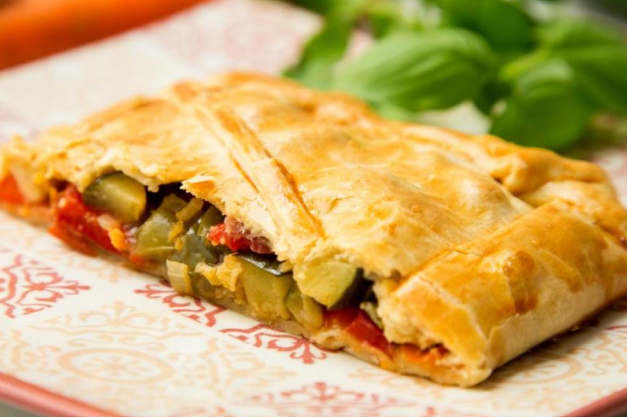

Empanadas de presunto e queijo
Geralmente recheados com presunto e queijo, podem conter ingredientes adicionais como cebola, pimenta e ovo cozido.

Empanadas argentinas
Um tipo de empanada muito popular na Argentina, que pode ter recheios variados, incluindo carne, frango, presunto e queijo ou vegetais.

Empanadas vegetarianas
Recheado com vegetais, como espinafre, cogumelos, abobrinha ou pimentão, muitas vezes com queijo e temperos.

Empanadas doces
Eles podem ser recheados com frutas, como maçã ou pêssego, e geralmente são adoçados com açúcar e canela.